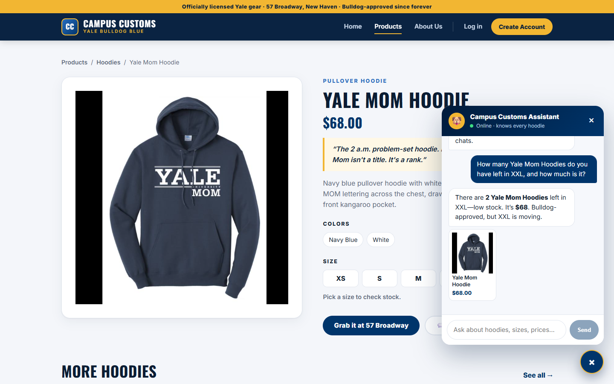
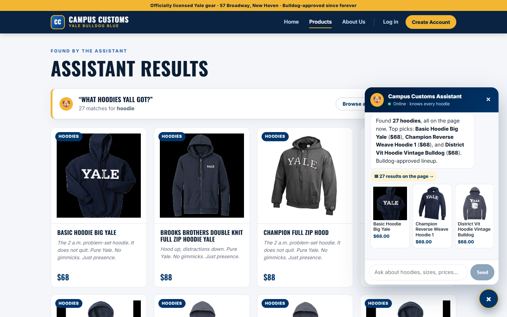
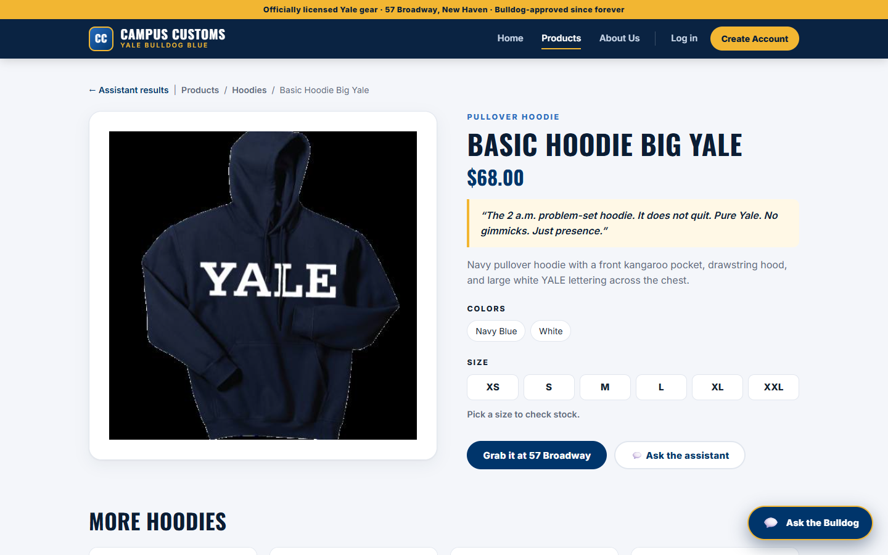
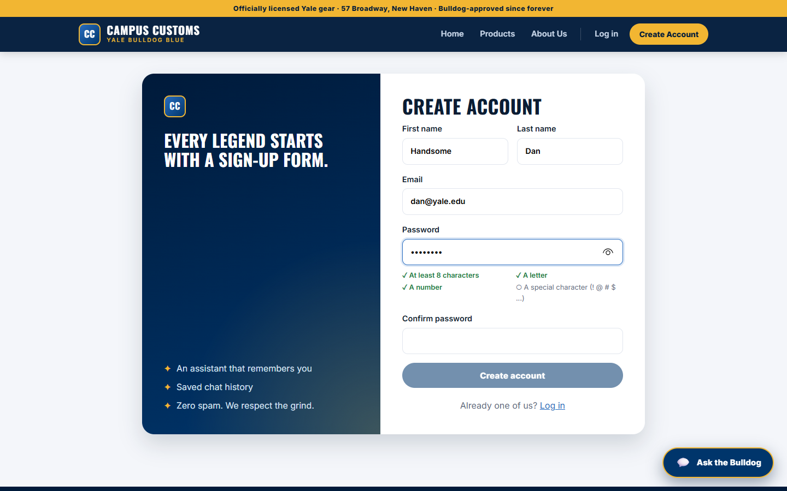
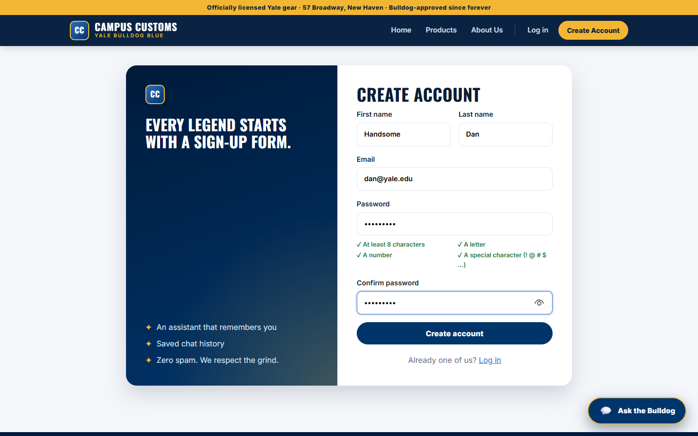

Campus Customs: app check
| Check | What was tested | Result |
|---|---|---|
| 1 | Chat looks up stock and price for an item | Pass |
| 2 | Category question shows search-result cards on the page; a card opens its product page | Pass |
| 3 | Usability feature: live password checklist (Problem 9) | Pass |
Check 1: Chat checks the inventory level of an item
Pass: answer matches the databaseOn the Yale Mom Hoodie product page, the shopper asked: "How many Yale Mom Hoodies do you have left in XXL, and how much is it?"

inventory XXL = 2 and catalogue price = $68.00.| Source | XXL in stock | Price |
|---|---|---|
Database (inventory, catalogue) | 2 | $68.00 |
| Assistant's answer | 2 (flagged as low stock) | $68 |
Check 2: Search-result cards appear after a category question
Pass: 27 of 27 hoodies shownFrom the home page, the shopper asked the chat: "what hoodies yall got?"

/products?view=chat on its own and showed 27 hoodie product cards (photo, category tag, blurb, price) under the banner "what hoodies yall got? · 27 matches for hoodie". The chat summarized the top picks. The database has 27 hoodie products, so every match reached the page.
/products/basic-hoodie-big-yale), with price, colors, sizes and a "← Assistant results" link back. Dynamic cards still open the detail view.Check 3: Usability feature (live password checklist)
Pass: button unlocks only when every rule is metOn Create Account, the password was typed in two steps. Nothing was submitted, so no account was created.

bulldog1, three rules are ticked green, "A special character" is still open, and the Create account button is disabled. The shopper sees what's missing before submitting.
! and confirming the password, all four rules are green and the button is enabled. The backend enforces the same rules (Problem 9, output/usability.md).